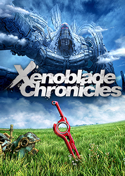
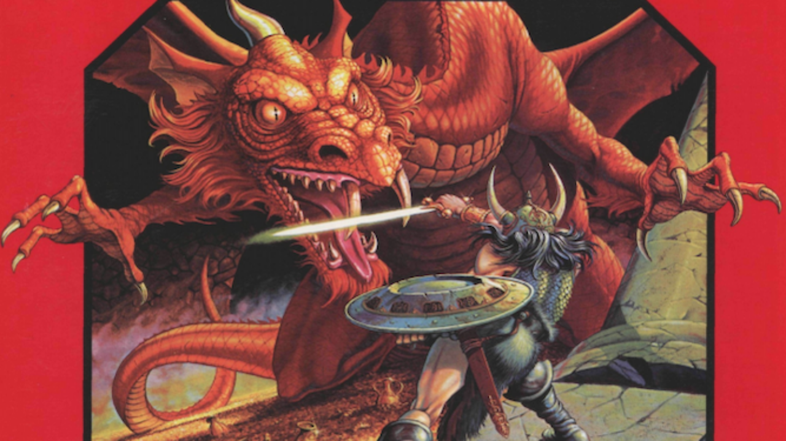

Hobbies
Uno de mis libros favoritos, el primero de una trilogia de la cual aun estoy esperando el ultimo, me lo enseño mi padre asi que lo tengo en mucha estima y estoy deseando poder leerme el ultimo.
Una de mis sagas favoritas, me encanta su ambiente futurista y su manera de cambiar de protagonistas constantemente hasta cierto punto hacia el final de sus historias.

El videojuego al que mas horas le he hechado(un total de 1233 xd), no creo que tenga nada que sea especialmente bueno, sino que su todo es mas que la suma de sus partes por lo que a mi parecer, sino mi favorito, el videojuego que mas me ha entretenido.

Un juego que, para mi, tiene de todo: socializar, divertirse con amigos, fantasear, crear una historia... La mejor experiencia a nivel de juego interactivo que he vivido.